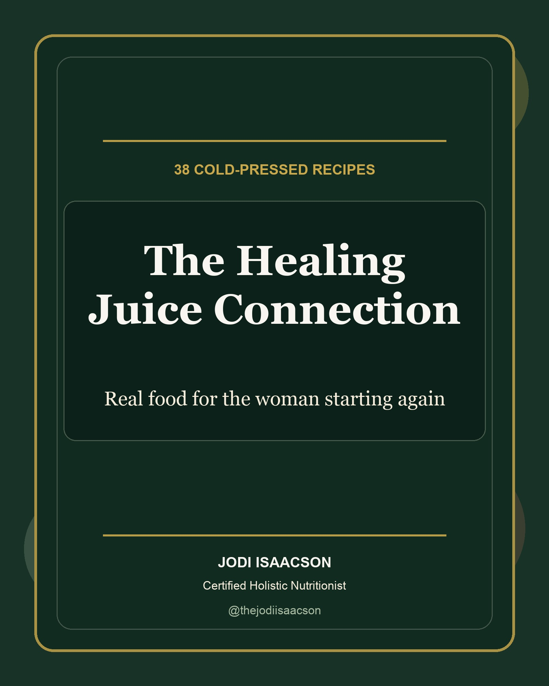

6 reasons this juice guide changed everything after 60
38 cold-pressed juice and blend recipes from the kitchen of a woman who released 215 pounds, reversed Type 2 diabetes and started again when most people thought it was too late.
Secure checkout through Stripe. Download access after purchase.

Why this is different from another cleanse
Yeah, Jodi has done the diet loop. Lose, regain, shame, try again. This guide came from the part after that, when food stopped being punishment and started being information.
These are daily recipes, not a three-day punishment plan.
Most juice books sell a reset that ends the second real life comes back. These recipes are built for repeatable days: green elixirs, thicker blends, refreshers, mini shots and coolers that fit into an actual kitchen.
The recipes came from someone who has lived the regain.
Jodi lost 120 pounds, regained 90 when her husband got sick and started again after 60. She did not write this from a perfect before-and-after. She wrote it from the middle of real life.
It makes raw food feel less extreme.
Cold-pressed juice can sound intense until you see it as one glass, one morning and one way to give your body something living before the old loop starts talking.
It explains enough without sounding like a textbook.
You will see why certain ingredients show up, how to store juice and what tools help. Plain language. No lecture. No pretending everyone has a perfect kitchen.
It gives you a way in when a full life change feels too much.
A whole new food life can feel huge. A glass of juice is smaller. That matters. Jodi started movement with two minutes. Food can start the same way.
It is rooted in proof, not wellness noise.
Jodi released 215 pounds, reversed Type 2 diabetes and watched her biological age drop from 73 to 66 in one year. Food was part of that story every single day.
What you get
- The Healing Juice Connection, 62-page digital guide
- 38 juice and blend recipes
- Green Elixirs, Thick Juices, Refreshers, Mini Shots and Coolers
- Kitchen essentials and storage guide
- Instant PDF download
If this does not feel useful after you open it, reply to your receipt email. Keep it simple.